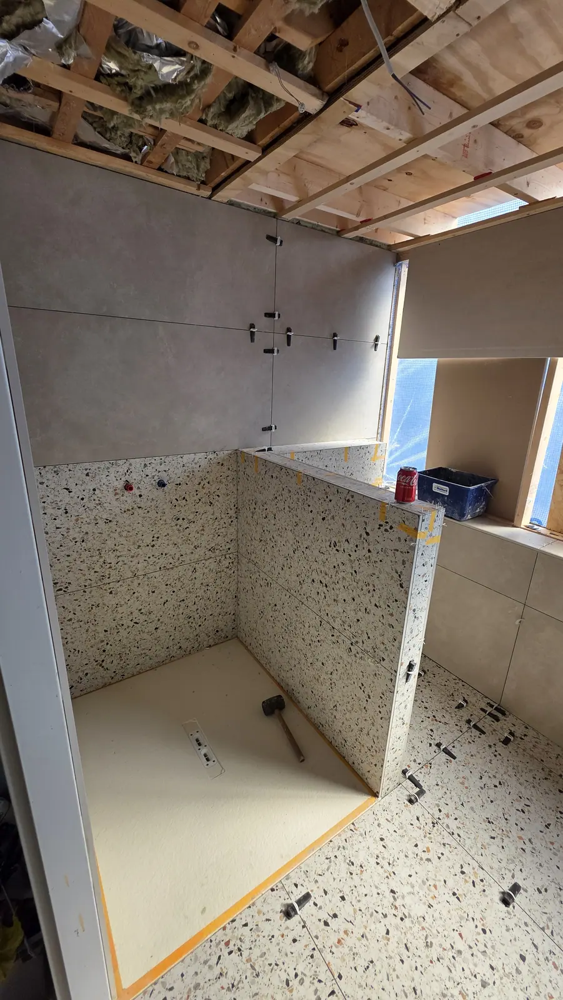

Badkamer laten plaatsen in Emmen
Nieuwe badkamer laten plaatsen in Emmen en omgeving? Wij slopen, installeren en werken netjes af, van leidingwerk en elektra tot tegelwerk en sanitair.
Wij slopen, installeren en werken netjes af
Een nieuwe badkamer laten plaatsen kan van sloop tot oplevering in één hand. Oosterveld verzorgt het leidingwerk, de elektra, het tegelwerk en het plaatsen van sanitair, zodat jij niet hoeft te schakelen tussen verschillende vakmensen.
- Oude badkamer slopen en afvoeren
- Water- en afvoerleidingen aanleggen of verleggen
- Elektra aanleggen: verlichting, stopcontacten en afzuiging
- Wanden en vloer tegelklaar maken en tegelen
- Douche, bad, toilet, badmeubel en kranen plaatsen
- Afkitten en opleveren

Zelf een badkamer gekocht?
Heb je een badkamer of sanitair al uitgekozen of gekocht? Neem contact met ons op. Stuur een foto of de specificaties mee, dan bespreken we of wij de plaatsing kunnen verzorgen en wat we vooraf moeten weten.
Dit willen we vooraf van je weten
In ons formulier vragen we hier gericht naar, zodat je snel een richtprijs krijgt.
Afmetingen en verdieping
Lengte en breedte van de ruimte en op welke verdieping de badkamer zit.
Installatie
Inbouw (in de wand) of opbouw (zichtbaar): dat bepaalt het leidingwerk.
Plafond en afzuiging
Moet het plafond worden afgewerkt, met stucwerk of kunststof? En is er afzuiging of komt die nieuw?
Sanitair
Inloopdouche of bad, badmeubel, radiator en toilet: wat wil je erin?
Zo werken we
Online richtprijs
Je vult je wensen in en krijgt snel een richtprijs.
Opname bij je thuis
Jasper komt langs, meet op en bespreekt de details.
Vaste prijs
Je ontvangt een definitieve offerte om te tekenen.
Uitvoering
We werken volgens een vaste planning en houden je op de hoogte.
Oplevering
We lopen alles samen na en laten je badkamer schoon achter.
Zo ziet het eruit
Van kale ruimte tot afgewerkte badkamer. Sleep over de foto.

 VoorNa
VoorNa
Badkamer J: van kale douchehoek naar afgewerkte inloopdouche
Het werk in uitvoering
Van sloop en leidingwerk tot tegelwerk en afwerking.



Een tegelvloer leggen
Tegels op een nivellerend systeem, vlak en strak.
Wat klanten zeggen
Reviews van klanten van Oosterveld.
“Zeer snelle prijsopgave voor een renovatie van de badkamer. Ondanks dat wij de samenwerking niet aangaan, communiceert hij erg positief en professioneel.”
“Super snelle reactie op mijn aanvraag op Werkspot, snel een afspraak, keurig werk en wederom snel een factuur. Absoluut een aanrader! Dank je wel Jasper voor je werk.”
“Vriendelijk man en hij heeft netjes gewerkt. Ook liet hij alles schoon achter.”
“Netjes gewerkt, goede adviezen, ze mogen vaker komen.”
Veelgestelde vragen
Kan ik mijn badkamer zelf kopen en door jullie laten plaatsen?
Neem contact met ons op als je zelf een badkamer of sanitair hebt gekocht. Stuur ons wat je hebt (merk, type en afmetingen) en we bespreken of we de plaatsing kunnen verzorgen.
Slopen jullie ook de oude badkamer?
Ja. Slopen en afvoeren hoort bij ons werk. Als de ruimte al kaal is, vervalt dat natuurlijk.
Moeten leidingen verlegd worden?
Dat hangt af van je nieuwe indeling. Blijven douche, toilet en wastafel op dezelfde plek, dan is er meestal minder leidingwerk. We bekijken het bij de opname.
Hoe lang duurt een badkamer renovatie?
De doorlooptijd hangt af van de grootte van de badkamer, de omvang van het werk en de levertijd van tegels en sanitair. Na je aanvraag en de opname geven we een concrete planning.
Hoe vraag ik een richtprijs of offerte aan?
Via het formulier op deze site, per WhatsApp of telefonisch. Je krijgt eerst een richtprijs. Daarna komen we bij je langs voor de opname en ontvang je een definitieve prijs.
Klaar voor je richtprijs?
Vul je wensen in en ontvang snel een richtprijs. Daarna komen we langs voor een vaste prijs.